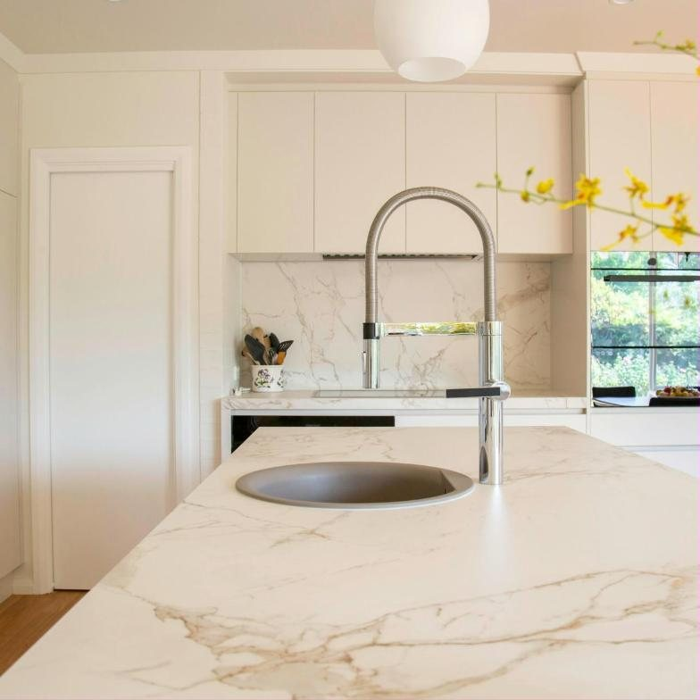
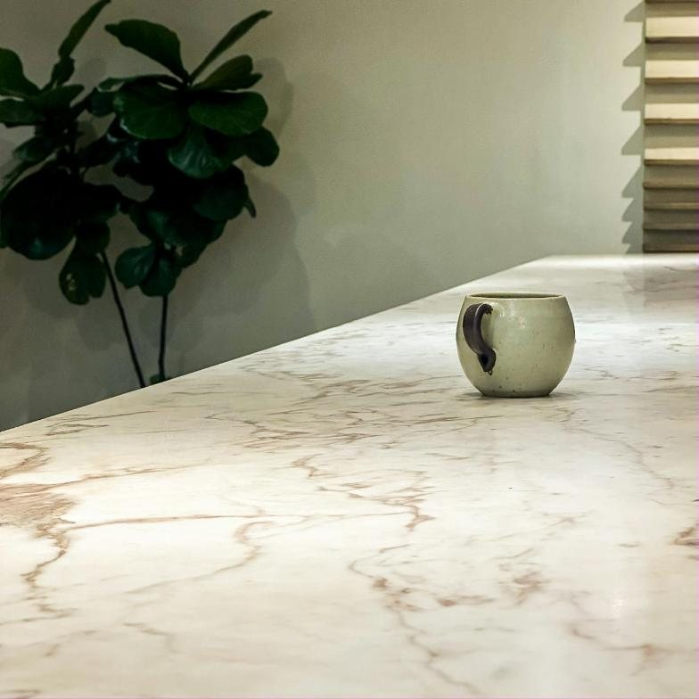
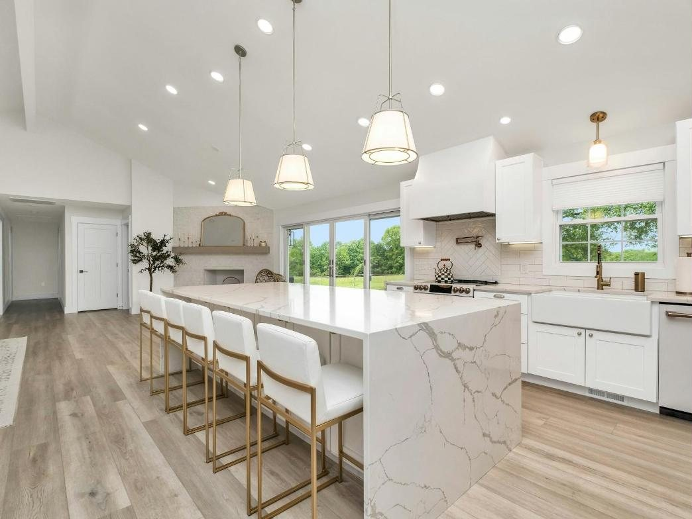

Marmoraria perto de você, em São Bernardo e no ABC
Bancadas, ilhas, lavatórios, cubas esculpidas e escadas sob medida em granito, mármore, quartzo, quartzito, lâminas ultracompactas e SSM. Da escolha da pedra à instalação.
- Medição no local sem custo
- Orçamento em geral em até 24h
- Garantia de 12 meses


- Até 24h
- para receber o orçamento, na maioria dos projetos
- Até 18x
- no cartão, sendo até 6x sem juros
- Até 70 km
- de raio de atendimento a partir de São Bernardo. Acima disso, consulte.
- 12 meses
- de garantia contratual no serviço
Obras entregues
Fotos reais de cozinhas e banheiros entregues pela Armanni para clientes do ABC e de São Paulo. Toque na foto para ver em tela cheia.
Mais de 100 avaliações no Google. Veja o que os clientes dizem sobre a Armanni.
Ler avaliações no GoogleO que a Armanni faz sob medida
Passe o cursor ou toque em cada item.

O que mais sai da nossa produção. Bancadas retas, em L, com cuba, cooktop embutido e acabamentos como meia-esquadria, saia e frontão.
Seis materiais e ajuda para escolher
Cada pedra se comporta de um jeito diante de calor, riscos, manchas e produtos químicos. Antes do orçamento, a gente entende onde a peça vai ficar e mostra as opções que fazem sentido para o uso e para o seu orçamento.
- GranitosDo clássico Verde Ubatuba, de ótimo custo-benefício, ao Preto São Gabriel e ao Branco Itaúnas.
- MármoresPara banheiros, painéis e pisos. Na cozinha, indicamos o dolomítico, com os cuidados certos.
- QuartzosSuperfícies industrializadas para bancadas de cozinha e banheiro.
- QuartzitosPedra natural para projetos de alto padrão.
- Lâminas ultracompactasSuperfícies para bancadas, revestimentos e painéis.
- SSMSuperfície sólida mineral para bancadas.
Do primeiro contato à instalação
Projetos majoritariamente sob medida, com a Armanni acompanhando cada etapa.
- 1
Orientação
Você conta o que precisa e a gente ajuda a escolher o material certo para o ambiente.
- 2
Orçamento
Com as medidas que você tiver, já sai uma estimativa. Em geral, em até 24 horas.
- 3
Medição técnica
Vamos até a obra medir tudo, sem custo para você.
- 4
Planejamento
Projeto aprovado, a fabricação é planejada peça por peça.
- 5
Acabamento
Bordas, rebaixos, cubas e recortes conforme o que foi especificado.
- 6
Instalação
Peças instaladas na obra pela nossa equipe.
Venha ver as pedras de perto
Na nossa loja em São Bernardo do Campo você vê os materiais pessoalmente, entende como cada um se comporta e conversa com quem vai cuidar do seu projeto. O café e o pão de queijo ficam por nossa conta.
- Endereço
- Praça Pedro Maçom, 26, Jardim Lavínia, São Bernardo do Campo, SP
- Horário
- Segunda a sexta, das 8h às 18h
Sábado, das 9h às 16h - Atendemos
- ABC, São Paulo e região. Consulte a disponibilidade para a sua cidade.
Para arquitetos, designers e construtores
Um canal próprio para quem especifica e executa obras. Orçamento ágil, orientação técnica sobre materiais e acabamentos e o compromisso de seguir a especificação do seu projeto, em obras residenciais e comerciais.
Falar com o time de parcerias- Arquitetos
- Designers de interiores
- Engenheiros
- Construtoras
- Empresas de reforma
- Marcenarias
Dúvidas frequentes
O que os clientes mais perguntam no atendimento.
Vocês fazem a medição no local?
Sim, a medição técnica é feita no local e não tem custo para o cliente.
Quanto tempo demora para receber um orçamento?
Depende da complexidade do projeto, da quantidade de peças, do material e das informações disponíveis, mas em geral o orçamento sai em no máximo 24 horas.
Vocês fazem orçamento sem medidas?
Sim. Fazemos uma estimativa inicial com as informações e medidas que você passar. Para fechar o pedido, as medidas técnicas são confirmadas na medição.
Qual é o prazo de entrega?
O prazo varia conforme o projeto e o material escolhido. Informamos a previsão de entrega junto com o orçamento.
Quais materiais vocês trabalham?
Granitos, mármores, quartzos industrializados, quartzitos, lâminas ultracompactas e SSM.
Qual é o melhor material para bancada de cozinha?
Depende do projeto, do uso, do orçamento e das características desejadas. Granitos, quartzos, quartzitos e superfícies ultracompactas têm características diferentes, e nossa equipe apresenta opções e orienta a escolha conforme o ambiente.
Mármore pode ser usado na cozinha?
Pode ser usado o mármore dolomítico, com atenção especial, porque é uma pedra natural mais suscetível a manchas e ao ataque de substâncias ácidas.
Posso escolher a chapa usada no meu projeto?
Sim, dependendo do tamanho do projeto. Quando a chapa inteira é usada, você pode escolher, e a equipe orienta a conferência da chapa junto ao fornecedor antes da fabricação.
Devo instalar primeiro os móveis ou as pedras?
As pedras podem ser instaladas em qualquer ordem, mas indicamos as pedras primeiro para que os itens fiquem independentes e o peso não sobrecarregue os móveis. Há exceções, como penínsulas ou mesas em que a pedra depende de uma base.
Quais são as formas de pagamento?
Pix, transferência bancária e cartão de crédito em até 18 parcelas, sendo até 6 sem juros, conforme as condições vigentes. A entrada é de 50% e o saldo segue o que estiver previsto no contrato.
A Armanni oferece garantia?
Sim. A garantia contratual do serviço é de 12 meses.
Como limpar e conservar a bancada?
Use pano macio, água e detergente neutro, evitando produtos abrasivos e químicos não recomendados pelo fabricante. A hidrofugação deve ser refeita a cada 6 meses.
Peça seu orçamento
Preencha em menos de um minuto. A mensagem chega pronta no nosso WhatsApp e a equipe responde no horário de atendimento.
Prefere falar direto? Chamar no WhatsApp (11) 94870-9543